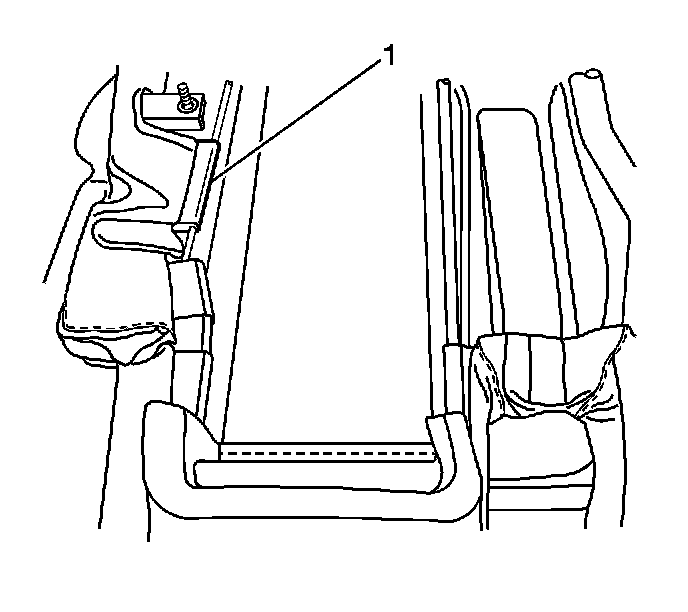

Rear Seat Cushion Cover and Pad Replacement - Left Side
Rear Seat Cushion Cover and Pad Replacement - Left Side
Removal Procedure
1. Remove the seat from the vehicle. Refer to Rear Seat Replacement (Rear Seat Replacement) .
2. Remove the left seat cushion. Refer to Rear Seat Cushion Replacement - Left Side (Rear Seat Cushion Replacement - Left Side) .
3. Remove the suspension spring from the bottom of the seat.

4. Disconnect the J channel retainers (1) from around the seat.
5. Remove the seat cushion cover.
Installation Procedure
1. Install the seat cushion cover on to the seat.
2. Connect all J channel retainers (1).
3. Install the suspension spring from the bottom of the seat.
4. Install the left seat cushion. Refer to Rear Seat Cushion Replacement - Left Side (Rear Seat Cushion Replacement - Left Side) .
5. Install the seat in the vehicle. Refer to Rear Seat Replacement (Rear Seat Replacement) .